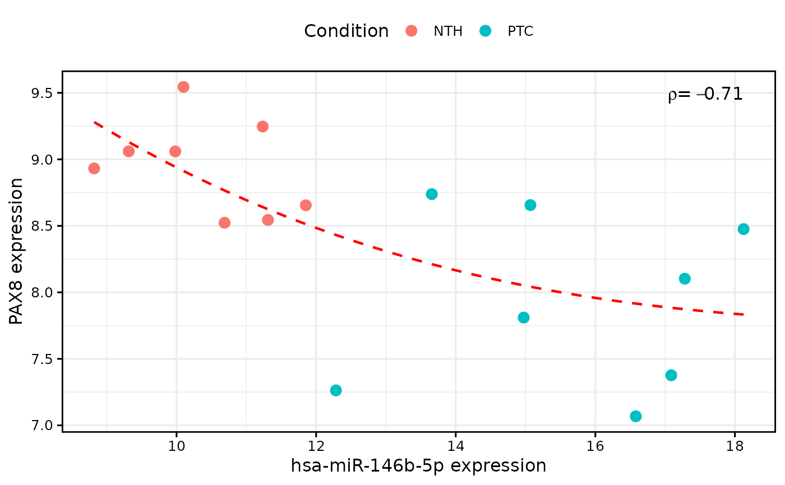

Plot correlation between miRNAs and genes within biological groups
Source:R/visualization.R
plotCorrelation.RdThis function creates a scatter plot that shows the correlation between
miRNA and gene expression levels. This is useful after correlation
analysis performed through the mirnaIntegration() function, to
graphically visualize the quantitative effect of miRNA dysregulations on
target gene expression. Furthermore, this function performs linear/monotonic
regression to better represent the relationships between miRNA-target pairs.
Usage
plotCorrelation(
mirnaObj,
mirna,
gene,
condition = NULL,
showCoeff = TRUE,
regression = TRUE,
useRanks = FALSE,
lineCol = "red",
lineType = "dashed",
lineWidth = 0.8,
pointSize = 3,
colorScale = NULL,
fontSize = 12,
fontFamily = "",
legend = "top",
borderWidth = 1,
allBorders = TRUE,
grid = TRUE
)Arguments
- mirnaObj
A
MirnaExperimentobject containing miRNA and gene data- mirna
The name of the miRNA for which we want to observe the correlation
- gene
The name of the gene for which we want to observe the correlation
- condition
It must be NULL (default) to plot expression based on the group variable used for differential expression analysis. Alternatively, it must be a character/factor object that specifies group memberships (eg. c("healthy, "healthy", "disease", "disease"))
- showCoeff
Logical, whether to show the correlation coeffficient or not. Note that the "R" is used for Pearson's correlation", "rho" for Spearman's correlation, and "tau" for Kendall's correlation. Default is TRUE
- regression
Logical, whether to display a linear/monotonic regression line that fits miRNA-gene correlation data. Default is TRUE
- useRanks
Logical, whether to represent non-parametric correlation analyses (Spearman's and Kendall's correlations) through rank-transformed data. Note that in this case, linear regression is performed on ranked data instead of monotonic regression. Default is FALSE
- lineCol
It must be an R color name that specifies the color of the regression line. Default is
red. Available color formats include color names, such as 'blue' and 'red', and hexadecimal colors specified as #RRGGBB- lineType
It specifies the line type used for the regression line. It must be either 'blank', 'solid', 'dashed' (default), 'dotted', 'dotdash', 'longdash' or 'twodash'
- lineWidth
The width of the fitted regression line (default is 0.8)
- pointSize
The size of points in the correlation plot (default is 3)
- colorScale
It must be a named character vector where values correspond to R colors, while names coincide with the groups specified in the
conditionparameter (eg. c("healthy" = "green", "disease" = "red")). Default is NULL, in order to use the default color scale. Available color formats include color names, such as 'blue' and 'red', and hexadecimal colors specified as #RRGGBB- fontSize
The base size for text elements within the plot. Default is 12
- fontFamily
The base family for text elements within the plot
- legend
The position of the legend. Allowed values are
top,bottom,right,leftandnone. The default setting istopto show a legend above the plot. Ifnoneis specified, the legend will not be included in the graph.- borderWidth
The width of plot borders (default is 1)
- allBorders
Logical, whetether to show all panel borders, or just the bottom and left borders. Default is TRUE
- grid
Logical, whether to show grid lines or not. Default is TRUE
Details
When non-parametric correlation has been performed with the
mirnaIntegration() function, a regression line can be fitted through
monotonic regression on expression levels, or through linear regression
performed on rank-transformed data. Since, ranks do not correspond to real
expression values, the default option is to perform monotonic regression
to fit a monotonic curve. To do so, this function makes use of the MonoPoly
R package, which implements the algorithm proposed by Murray et al. in 2016.
References
K. Murray, S. Müller & B. A. Turlach (2016) Fast and flexible methods for monotone polynomial fitting, Journal of Statistical Computation and Simulation, 86:15, 2946-2966, DOI: 10.1080/00949655.2016.1139582.
Author
Jacopo Ronchi, jacopo.ronchi@unimib.it
Examples
# load example MirnaExperiment object
obj <- loadExamples()
# plot correlation between miR-146b and PAX8 with monotonic regression curve
plotCorrelation(obj, "hsa-miR-146b-5p", "PAX8", condition = "disease")
